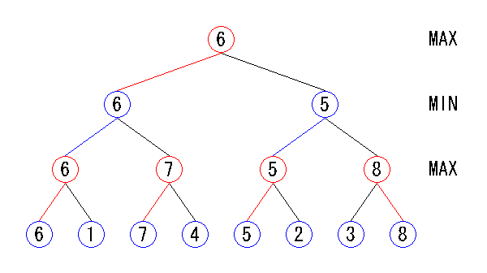
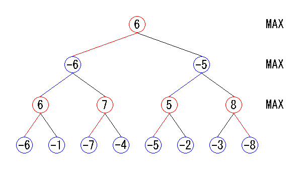

| 2.4 MinMax法とNegaMax法 |
局面を展開して得られたゲーム木から、どのようにして手を選択すればよいでしょうか。
前節では３手先を読んだ場合のゲーム木を作りました。
このゲーム木について考える前に、まず１手だけ先を読んだ場合を考えてみましょう。
答えは単純で、最も評価値の高い手を選べばよいのです。
何手先を読む場合も、基本的な考え方は同じで、各ノードについて以下の処理を行います。
このアルゴリズムをMinMax法（ミニマックス法）と呼びます。
前節で作成したゲーム木からMinMax法を使って手を選んだのが下の図です。
赤または青く塗られたブランチが、選択した手を表しています。

MinMax法による探索
MinMax法では、自分の手番か相手の手番かによって、最大化をするか最小化をするかが異なります。
これをどちらの手番でも最大化するようにしたものがNegaMax法（ネガマックス法）です。
どのノードでも最大化処理となるので、関数の実装が少し単純になります。
NegaMax法では、リーフの評価値はそのノードの手番での値になります。
つまり、自分の手番なら自分にとっての評価値、相手の手番なら相手にとっての評価値になります。
次に、各ノードでそのノードにとって最大の評価値の子ノードを選びます。
そのノードにとって最大なので、評価値が最小となる子ノードを選ぶことになります。
ノードの評価値は、選択した子ノードの評価値に-1を掛けた値にします。

NegaMax法による探索
それではNegaMax法の実装をしましょう。
static int Com_EndSearch(Com *self, int in_depth, int in_color, int in_opponent, int in_pass, int *out_move)
{
int x, y;
int value, max = -MAX_VALUE;
int can_move = 0;
int move;
if (in_depth == 0) {
self->Node++;
return Board_CountDisks(self->Board, in_color) - Board_CountDisks(self->Board, in_opponent);
}
*out_move = NOMOVE;
for (x = 0; x < BOARD_SIZE; x++) {
for (y = 0; y < BOARD_SIZE; y++) {
if (Board_Flip(self->Board, in_color, Board_Pos(x, y))) {
if (!can_move) {
*out_move = Board_Pos(x, y);
can_move = 1;
}
value = -Com_MidSearch(self, in_depth - 1, in_opponent, in_color, 0, &move);
Board_Unflip(self->Board);
if (value > max) {
max = value;
*out_move = Board_Pos(x, y);
}
}
}
}
if (!can_move) {
if (in_pass) {
*out_move = NOMOVE;
self->Node++;
max = Board_CountDisks(self->Board, in_color) - Board_CountDisks(self->Board, in_opponent);
} else {
*out_move = PASS;
max = -Com_MidSearch(self, in_depth, in_opponent, in_color, 1, &move);
}
}
return max;
}
まず引数は以下のようになっています。
self : Comクラスへのポインタ
in_depth : 探索の手数（Com_EndSearch()の場合は空きマスの数と一致する）
in_color : 自分の手番
in_opponent : 相手の手番
in_pass : 直前の手がパスなら1、パスでなければ0
*out_move : 選択した手を格納しておく。
処理は以下のようになっています。
リーフ（in_depthが0）であれば局面の評価値（ここでは石差）を返す。
リーフでない場合には各マスに対して着手できるかどうかを調べる。
着手できるのであればCom_EndSearch()を呼び出して着手後の局面の探索を行う。
これを繰り返して最大の評価値となる手を調べる
1箇所も着手できない場合には、直前の手がパスであるかどうかを調べる。
直前の手がパスであれば終局を意味するので局面の評価値（ここでは石差）を返す。
直前の手がパスでなければパスをしてパス後の局面の探索を行う。
まだ中盤の評価が行えないため、Com_MidSearch()はCom_EndSearch()と同じ処理を行うようになっています。
局面評価については次章で説明します。
main()を実行するとコンピュータと対局を行います。
最初に自分の色を選択して実際に対局してみてください。
ただし、まだ中盤の評価を行えないため4x4の盤面を使用するようになっています。
また強さの設定はできず、常に最善手を選択するようになっています。